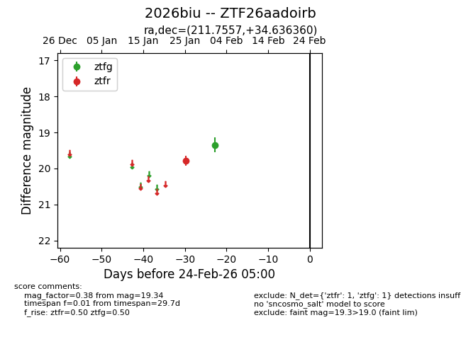
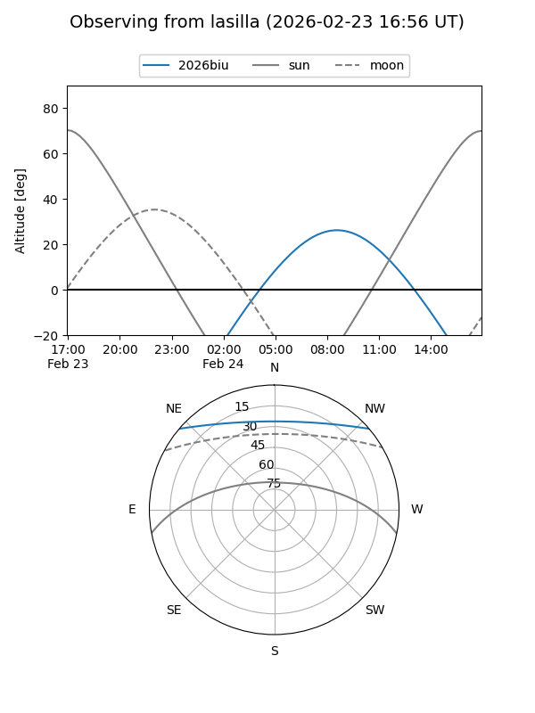
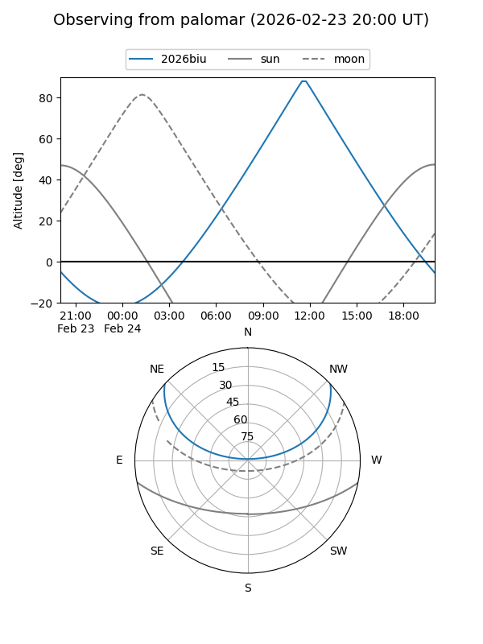

2026biu
Target 2026biu at 2026-01-27 12:12
Aliases and brokers:
FINK: link
Lasair: link
ALeRCE: link
TNS: link
YSE: link
alt names
ZTF26aadoirb (ztf,fink_ztf)
2026biu (tns,yse)
Coordinates:
equatorial (ra, dec) = 211.7557,+34.63636
equatorial (HMS+DMS) = 14:07:01.38,+34:38:10.90
galactic (l, b) = (62.4530,+72.16870)
Flags:
Photometry:
last ztfr=19.78
1 ztfr detections
Lightcurve

Visibility


Additional plots